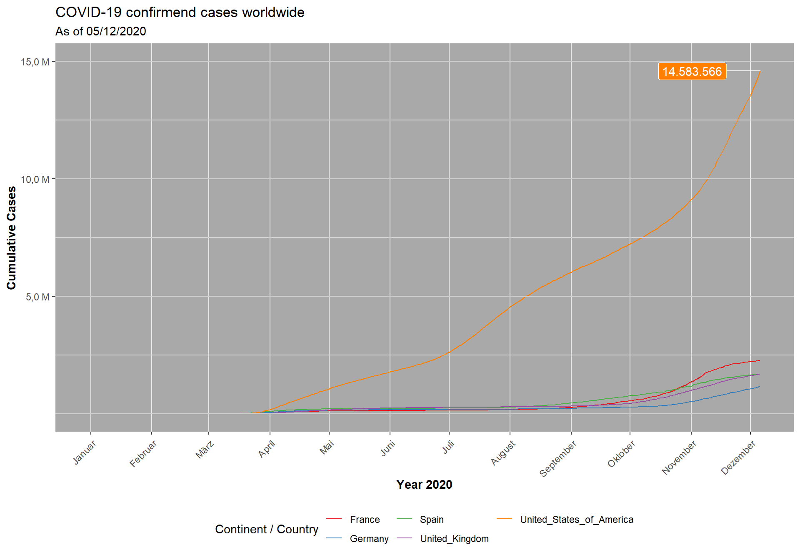

Journal (reproducible report)
Nils Stamm
2020-11-05
1 4th Assignmend – DATA VISUAIZATION
\(~\)
1.1 Line plot of COVID-19 cases (Challenge 1)
1.1.1 Result
Time course of the cumulative COVID-19 cases in France, Germany, Spain, UK and the US.
cases_worldwide <- readRDS("data/05-1_line-plot_cases-worldwide.rds")
cases_worldwide Comment: Somehow the x-axis labels are printed in German because of my system language. This seems to be a Windows issue. On Mac they are printed in English.
\(~\)
1.1.2 Code
# 1 DATA ACQUISITION ------------------------------------------------------
# Load packages
library(readr)
url <- "https://opendata.ecdc.europa.eu/covid19/casedistribution/csv"
covid_data_dt <- read_csv(url)
# 2 DATA WRANGLING --------------------------------------------------------
# Load packages
library(tidyverse)
library(lubridate)
# --- --- --- for one Country --- --- ----
# # Select appropriate columns
# covid_cases <- covid_data_dt %>%
# select(c(1:5,"countriesAndTerritories")) %>%
# rename("country" = "countriesAndTerritories")
#
# # filter for countries
# covid_cases_countries <- covid_cases %>%
# filter(country %in% c("France")) #,"Germany","Spain","United_Kingdom","United_States_of_America")) %>%
#
# # Cumulate Cases
# covid_cumCases_countries <- covid_cases_countries %>%
#
# # add smart date column & order
# mutate(date = str_glue("{year}-{month}-{day}") %>% as.Date()) %>%
# arrange(date) %>%
#
# # Cumulate Cases
# mutate(cumCases = cumsum(cases))
# --- --- --- for all Countries --- --- ----
# Select appropriate columns
covid_cases <- covid_data_dt %>%
select(c(1:5,"countriesAndTerritories")) %>%
rename("country" = "countriesAndTerritories")
# filter for countries
covid_cases_countries <- covid_cases %>%
filter(country %in% c("France","Germany","Spain","United_Kingdom","United_States_of_America"))
# Cumulate Cases
covid_cumCases_countries <- covid_cases_countries %>%
# add smart date column & order
mutate(date = str_glue("{year}-{month}-{day}") %>% as.Date()) %>%
arrange(date) %>%
# Cumulate Cases
group_by(country) %>%
mutate(cumCases = cumsum(cases)) %>%
ungroup() %>%
# Label text
mutate(cumCases_text = scales::dollar(cumCases, big.mark = ".",
decimal.mark = ",",
prefix = "",
suffix = ""))
## Writing files
# write_rds(covid_cumCases_countries, "covid_cumCases_countries.rds")
# 3 DATA VISUALIZATION --------------------------------------------------------------
# Load packages
library(ggthemes)
library(ggrepel)
library(ggplot2)
# Scaling var
ylab <- c(5.0, 10.0, 15.0)
# Canvas
cases_worldwide <- covid_cumCases_countries %>%
ggplot(aes(date, cumCases, color = country)) +
# Geometries
geom_line(size = 0.5, linetype = 1) +
geom_hline(yintercept = seq(0, 15e6, 2500000), colour="light grey") + # horizontal net
geom_label_repel(aes(label = cumCases_text),
data = covid_cumCases_countries %>% filter(cumCases == max(cumCases)),
show.legend = F, # no label legend
color = "white",
hjust = 1.5,
point.padding = 1e-06, # position label + line
fill = RColorBrewer::brewer.pal(n = 5, name = "Set1")[5] # label background = line color
) +
# Formatting
scale_x_date(date_labels = "%B", date_breaks = "1 month") +
scale_y_continuous(labels = paste0(ylab, ",0 M"),breaks = 10^6 * ylab) +
scale_color_brewer(palette = "Set1") + # color categories
labs(
title = "COVID-19 confirmend cases worldwide",
subtitle = "As of 05/12/2020",
x = expression(bold("Year 2020")),
y = expression(bold("Cumulative Cases")),
color = "Continent / Country" # Legend text
) +
# Theme
theme_bw() +
theme(legend.position = "bottom",
legend.direction = "vertical",
axis.text.x = element_text(angle = 45, hjust = 1, vjust = 0.95),
panel.grid.minor = element_blank(),
panel.border = element_blank(),
panel.background = element_rect(fill = "dark grey")
) +
guides(color=guide_legend(nrow=2, title.position = "left")) # two row legend
# Writing files
write_rds(cases_worldwide, "line-plot_cases-worldwide.rds")\(~\)
1.2 Worlwide morality rate (Challenge 2)
1.2.1 Result
Visualization of the distribution of the mortality rate (deaths / population) over the world.

\(~\)
1.2.2 Code
# 1 DATA AQUISITION -------------------------------------------------------
library(readr)
url <- "https://opendata.ecdc.europa.eu/covid19/casedistribution/csv"
covid_data_dt <- read_csv(url)
library(maps)
world <- map_data("world")
# 2 DATA WRANGLING --------------------------------------------------------
# Load packages
library(tidyverse)
library(lubridate)
library(data.table)
# Input arguments
date_lvl <- "2020-12-05"
date_lvl <- as.Date(date)
# --- --- COVID DATA --- --- --- --- ---
# Select appropriate columns
covid_deaths <- covid_data_dt %>%
select(c(1:7,"countriesAndTerritories", "popData2019")) %>%
rename("country" = "countriesAndTerritories")
# Level of deaths & mortality
covid_mort_lvl <- covid_deaths %>%
# add smart date column & order
mutate(date = str_glue("{year}-{month}-{day}") %>% as.Date()) %>%
arrange(date) %>%
# equalize country designations
mutate(across(country, str_replace_all, "_", " ")) %>%
mutate(country = case_when(country == "United Kingdom" ~ "UK",
country == "United States of America" ~ "USA",
country == "Czechia" ~ "Czech Republic",
TRUE ~ country
)
) %>%
# Cumulate deaths
group_by(country) %>%
mutate(deaths_overall = cumsum(deaths)) %>%
ungroup() %>%
# filter for desired level
filter(date == date_lvl) %>%
# calculate mortality at level
mutate(mortality = deaths_overall / popData2019)
# Project mortality on world
setDT(world)
setDT(covid_mort_lvl)
covid_mort_worlwide <- merge(x = covid_mort_lvl,
y = world,
by.x = "country",
by.y = "region",
all.x = FALSE,
all.y = TRUE)
setDF(covid_mort_lvl)
# # Writing files
# write_rds(covid_cumCases_countries, "covid_cumCases_countries.rds")
# 3 DATA VISUALIZATION --------------------------------------------------------------
# Load packages
library(ggplot2)
library(scales)
# Canvas
morality_rate <- ggplot() +
# Geometries
geom_map(data = covid_mort_worlwide,
map = world,
aes(map_id = country, x = long, y = lat, fill= mortality),
colour = RColorBrewer::brewer.pal(n = 9, name = "Greys")[3],
size=0.25) +
# Formatting
scale_fill_gradient(low = RColorBrewer::brewer.pal(n = 9, name = "Reds")[7],
high = "black",
labels = percent) +
labs(title = "Confirmend COVID-19 deaths relative to the size of the population",
subtitle = "More than 1.5 Million confirmend COVID-19 deaths worldwide",
caption = str_glue("Date: {covid_mort_lvl[[1,1]]}"),
fill = "Mortality Rate"
) +
# Theme
theme_minimal() +
theme(axis.line=element_blank(),axis.text.x=element_blank(),
axis.text.y=element_blank(),axis.ticks=element_blank(),
axis.title.x=element_blank(),
axis.title.y=element_blank()
)
# Plot
morality_rate
# Writing files
write_rds(morality_rate, "map-plot_morality-rate.rds")\(~\) \(~\)
\(~\)
2 3rd Assignmend – DATA WRANGLING
\(~\)
From now on: Teamwork with Philip Salmang
2.1 Preparation of Data
In this step, all needded data was read into the variables patent_tbl,patent_assignee_tbl,assignee_tbl and uspc_tbl. The Data was wrangled in such a way, that not needed columns were deleted and new tables were created by merging the existings tables. The specific variables needed in the upcoming challenges are mentioned inside the code.
library(data.table) # Extension of 'data.frame' for fast manipulation of large Data
library(tidyverse) # Main Package - Loads dplyr, purrr, etc.
library(vroom) # Read and Write Rectangular Text Data Quickly
library(lubridate)
# 1.0 Set up and defining columns that we are interested in ----
# 1.0.1 for files that will be read
col_types <- list(
id = col_character(),
date = col_date("%Y-%m-%d"),
num_claims = col_double())
# 1.0.2 patent_assignee_col_types
patent_assignee_col_types <- list(patent_id = col_character(),
assignee_id = col_character())
# 1.0.3 assignee_col_types
assignee_col_types <- list(id = col_character(),
type = col_character(),
organization = col_character())
# 1.0.4 uspc_tbl
uspc_col_types <- list(patent_id = col_character(),
mainclass_id = col_character() ,
sequence = col_character())
## 1.1 Reading data to create tables
# 1.1.1 Creating patent_tbl
patent_tbl <- vroom(
file = "02_data_wrangling/patent.tsv",
delim = "\t",
col_types = col_types,
na = c("", "NA", "NULL"))
setDT(patent_tbl)
# 1.1.2 Creating patent_assignee_tbl
patent_assignee_tbl <- vroom(
file = "02_data_wrangling/patent_assignee.tsv",
delim = "\t",
col_types = patent_assignee_col_types,
na = c("", "NA", "NULL"))
setDT(patent_assignee_tbl)
# 1.1.3 Creating assignee_tbl
assignee_tbl <- vroom(
file = "02_data_wrangling/assignee.tsv",
delim = "\t",
col_types = assignee_col_types,
na = c("", "NA", "NULL"))
setDT(assignee_tbl)
## 1.1.4 Creating uspc_tbl
uspc_tbl <- vroom(
file = "02_data_wrangling/uspc.tsv",
delim = "\t",
col_types = uspc_col_types,
na = c("", "NA", "NULL")) %>%
# remove column sequence since it is not needed
subset(select = -sequence)
setDT(uspc_tbl)
# make a uspc table with unique combos of patent_id and mainclass_id
uspc_unique_tbl <- uspc_tbl[, .(patent_id, mainclass_id)] %>% unique()
## 1.3 Merge necessary tables for extracting relevant data
# 1.3.1 Merge patent_assignee_tbl and assignee_tbl
patent_assignee_merge_dt <- merge(x = assignee_tbl, y = patent_assignee_tbl,
by.x = "id",
by.y = "assignee_id")
# 1.3.2 Merge patent_assignee_merge_dt and patent_tbl;
# patent_dominance_dt used in Challenge 1 and 2
patent_dominance_dt <- merge(x = patent_assignee_merge_dt, y = patent_tbl,
by.x = "patent_id",
by.y = "id",
all.x = T,
all.y = F)
# Change Date into year, month, day
patent_dominance_dt <- patent_dominance_dt[, .(patent_id,
id,
type,
organization,
year = year(date),
month = month(date),
day = day(date))]
# 1.3.3 Merge patent_dominance_dt and uspc_tbl;
# patent_dominance_innovation_dt only used in Challenge 3
patent_dominance_innovation_dt <- merge(x = uspc_unique_tbl,
y = patent_dominance_dt,
by = "patent_id",
all.x = F,
all.y = T)\(~\)
2.2 Patent Dominance (Challenge 1)
patent_dominance_US_dt <-
patent_dominance_dt[!is.na(organization)][ # remove any rows containing NA
type %in% c(2,4,6,8,9),.N, by = organization # Filter for US companies and count
][,.(Nr_Patents = N, organization)][ # Rename N
order(Nr_Patents, decreasing = TRUE) # Order Nr_Patents decreasing order
][1:10,] # slice to get first 10 companies\(~\)
What US company / corporation has the most patents? List of the 10 US companies with the most assigned/granted patents.
patent_dominance_US_dt <- readRDS("data/patent_dominance_US_dt.rds")
patent_dominance_US_dt## Nr_Patents organization
## 1 7547 International Business Machines Corporation
## 2 3165 Microsoft Corporation
## 3 2668 Google Inc.
## 4 2597 QUALCOMM Incorporated
## 5 2201 Apple Inc.
## 6 1873 General Electric Company
## 7 1638 Hewlett-Packard Development Company, L.P.
## 8 1625 AT&T INTELLECTUAL PROPERTY I, L.P.
## 9 1616 Intel Corporation
## 10 1533 GM Global Technology Operations LLC\(~\)
2.3 Recent activity (Challenge 2)
patent_dominance_july_US_dt <-
patent_dominance_dt[
!is.na(organization) # remove any rows containing NA
][month == 7,.(id, type, organization)][ # Filter for month 7
type %in% c(2,4,6,8,9),.N, by = organization # Filter for US companies and count
][,.(Nr_Patents = N, organization)][ # Rename N
order(Nr_Patents,decreasing = TRUE) # Order Nr_Patents decreasing order
][1:10,] # slice to get first 10 companies\(~\)
What US company had the most patents granted in 2019? Top 10 companies with the most new granted patents for 2019.
patent_dominance_US_dt <- readRDS("data/patent_dominance_july_US_dt.rds")
patent_dominance_US_dt## Nr_Patents organization
## 1 772 International Business Machines Corporation
## 2 315 Microsoft Corporation
## 3 278 QUALCOMM Incorporated
## 4 254 Google Inc.
## 5 219 Apple Inc.
## 6 187 General Electric Company
## 7 176 Hewlett-Packard Development Company, L.P.
## 8 172 Intel Corporation
## 9 153 AT&T INTELLECTUAL PROPERTY I, L.P.
## 10 145 GM Global Technology Operations LLC\(~\)
2.4 Most Innovative Main Classes (Challenge 3)
patent_dominance_world_dt <-
patent_dominance_dt[!is.na(organization)][ # remove any rows containing NA
,.N, by = organization # Count the amount of patents for each company
][,.(Nr_Patents = N, organization)][ # Rename N
order(Nr_Patents,decreasing = TRUE) # Order Nr_Patents decreasing order
][1:10,] # slice to get first 10 companies
# 4.2 Extracting Top 5 mainclass_id of Top 10 Organizations with
# patent_dominance_innovation_dt
top_mainclass <- merge(x = patent_dominance_world_dt,
y = patent_dominance_innovation_dt,
by = "organization") %>%
# Remove unnecessary columns
subset(select = -c(id, type, year, month, day, Nr_Patents))
# Extracting Top 5 mainclasses out of top_mainclass
top_5_mainclass <-
top_mainclass[!is.na(mainclass_id)][ # remove any rows containing NA
,.N, by = mainclass_id # Count the amount of each mainclass_id
][,
.(Nr_mainclass = N, mainclass_id)][ # Rename N
order(Nr_mainclass, decreasing = TRUE) # Order Nr_mainclass decreasing order
][1:5,] # slice to get first 5 mainclass_id\(~\)
What is the most innovative tech sector? The top 5 USPTO tech main classes for the top 10 companies (worldwide) with the most patents are:
patent_dominance_US_dt <- readRDS("data/top_5_mainclass.rds")
patent_dominance_US_dt## Nr_mainclass mainclass_id
## 1 2790 257
## 2 2528 370
## 3 2453 455
## 4 1981 709
## 5 1875 348\(~\) \(~\)
3 2nd Assignmend – DATA AQUISITION
3.1 API (Challenge 1)
3.1.1 Result
The following data are downloaded from football98-API (Last Update: 20/12/06). It contains information about all football players from Italian football Serie A.
serie_a_players <- readRDS("data/03-1_serie-a-players.rds")
serie_a_players## player_position player_name player_squad player_role player_goals
## 1 1 M. Oyarzabal Real Sociedad Striker 6
## 2 2 P. Alcácer Villarreal Striker 5
## 3 3 I. Aspas Celta Vigo Striker 5
## 4 4 G. Moreno Villarreal Striker 5
## 5 5 J. Félix Atlético Madrid Striker 5
## 6 6 L. Suárez Atlético Madrid Striker 5
## 7 7 K. Benzema Real Madrid Striker 4
## 8 8 A. Fati Barcellona Striker 4
## 9 9 J. Luis Morales Levante Midfielder 4
## 10 10 Portu Real Sociedad Striker 4
## player_penalties
## 1 4
## 2 1
## 3 1
## 4 3
## 5 1
## 6 0
## 7 0
## 8 0
## 9 0
## 10 0Comment: Here seems to be an issue with special characters from rmarkdown to html. So far I did not find a solution.
\(~\)
3.1.2 Code
# API ----
# Load packages
library(httr)
library(tidyverse)
library(jsonlite)
# request data via API
url <- "https://football98.p.rapidapi.com/liga/scorers"
# Process data from API
response <- VERB("GET", url, add_headers("X-RapidAPI-Key"= '39a799b910msha3a1393a9c2d30bp1fbef4jsne313ffa56616', "X-RapidAPI-Host" = 'football98.p.rapidapi.com', ''), content_type("application/octet-stream"))
content(response, "text")
serie_a_players <- rawToChar(response$content) %>% fromJSON()
# writing files
#write_rds(serie_a_players, "serie_a_players.rds")
serie_a_players_sl <- serie_a_players %>%
slice(1:10)
write_rds(serie_a_players_sl, "serie_a_players.rds")3.2 Web Scraping (Challenge 2)
Last compiled: 2020-12-06
The following data are scraped from Radon Bikes (Last Update: 20/12/01)
3.2.1 Result
The bike manufacturer has the following product families
bike_family_tbl <- readRDS("data/bike_family_tbl.rds")
bike_family_tbl## # A tibble: 4 x 2
## position family_class
## <int> <chr>
## 1 1 mountainbike
## 2 2 trekking & cross
## 3 3 e-bike
## 4 4 roadbike\(~\)
Each of them is on after another divided into two product categories
bike_category_tbl <- readRDS("data/bike_category_tbl.rds")
bike_category_tbl## # A tibble: 8 x 2
## position categories
## <int> <chr>
## 1 1 hardtail
## 2 2 fullsuspension
## 3 3 trekking
## 4 4 cross
## 5 5 mountainbike
## 6 6 trekking
## 7 7 carbon
## 8 8 alu\(~\)
Final merged data
families <- readRDS("data_cleaned_compl_tabl.rds")
families## product.id family category model price_EUR
## 1 1 mountainbike hardtail JEALOUS 8.0 2599
## 2 2 mountainbike hardtail JEALOUS 9.0 2999
## 3 3 mountainbike hardtail JEALOUS 10.0 3999
## 4 4 mountainbike hardtail JEALOUS 10.0 EA 5299
## 5 5 mountainbike hardtail JEALOUS 10.0 3699
## 6 6 mountainbike hardtail JEALOUS 10.0 EA 3799
## 7 8 mountainbike hardtail JEALOUS AL 8.0 999
## 8 9 mountainbike hardtail JEALOUS AL 8.0 HD 1299
## 9 10 mountainbike hardtail JEALOUS AL 9.0 1499
## 10 11 mountainbike hardtail JEALOUS AL 10.0 1799
## 11 12 mountainbike hardtail JEALOUS AL 10.0 SL 1999
## 12 13 mountainbike hardtail CRAGGER 7.0 1199
## 13 14 mountainbike hardtail CRAGGER 8.0 1799
## 14 15 mountainbike hardtail CRAGGER 8.0 1649
## 15 16 mountainbike hardtail ZR TEAM 7.0 799
## 16 17 mountainbike hardtail ZR TEAM 7.0 799
## 17 18 mountainbike hardtail ZR TEAM 8.0 899
## 18 19 mountainbike hardtail ZR TEAM 8.0 899
## 19 20 mountainbike hardtail ZR TEAM 6.0 699
## 20 21 mountainbike hardtail ZR TEAM 6.0 699
## 21 22 mountainbike hardtail ZR TEAM 7.0 699
## 22 23 mountainbike hardtail ZR TEAM 7.0 699
## 23 24 mountainbike hardtail ZR TEAM 8.0 849
## 24 25 mountainbike hardtail ZR TEAM 8.0 999
## 25 26 mountainbike hardtail ZR TEAM NX1 799
## 26 27 mountainbike hardtail ZR TEAM NX1 799
## 27 28 mountainbike hardtail ZR LADY 7.0 799
## 28 29 mountainbike hardtail ZR LADY 8.0 899
## 29 30 mountainbike hardtail ZR LADY 6.0 699
## 30 31 mountainbike hardtail ZR LADY 7.0 649
## 31 32 mountainbike hardtail ZR LADY 8.0 849\(~\)
3.2.2 Code
The product structure was scraped as shown below
# 2.0 COLLECT PRODUCT FAMILIES & Categories ----
# 2.1 Families
url_home <- "https://www.radon-bikes.de"
# Read in the HTML for the entire webpage
html_home <- read_html(url_home)
# Web scrape the for the families
bike_family_tbl <- html_home %>%
html_nodes(css = ".megamenu > a") %>% # nodes
html_text() %>%
tolower() %>% # convert into lowercase
# Convert vector to tibble
enframe(name = "position", value = "family_class")
bike_family_tbl <- bike_family_tbl[-5,]
write_rds(bike_family_tbl, "bike_family_tbl")
# 2.2 Categories
bike_category_tbl <- html_home %>%
html_nodes(css = ".megamenu__item") %>% # nodes
html_text() %>%
tolower() %>% # convert into lowercase
# Convert vector to tibble
enframe(name = "position", value = "categories")
# delete superfluous rows
bike_category_tbl <- bike_category_tbl[-9:-10,]
write_rds(bike_category_tbl, "bike_category_tbl")\(~\)
The data of the bikes of the first category hardtail was scraped with
# 3 COLLECT BIKE DATA ----
library(tidyverse) # Main Package - Loads dplyr, purrr, etc.
library(rvest) # HTML Hacking & Web Scraping
library(stringi) # character string/text processing
url_category <- "https://www.radon-bikes.de/mountainbike/hardtail/bikegrid/"
html_category <- read_html(url_category)
# 3.1 Bike names
bike_names_tbl <- html_category %>%
html_nodes(css = ".a-heading--small") %>% # nodes
html_text() %>%
str_extract(pattern = "(?<=\\s)[A-Z].*(?=\\n)") %>%
na.omit() %>%
# Convert vector to tibble
enframe(name = "product.id", value = "model")
# 3.2 Prices
bike_prices_tbl <- html_category %>%
html_nodes(css = ".m-bikegrid__price--active") %>% # nodes
html_text() %>%
str_extract(pattern = "\\d+") %>%
na.omit() %>%
# Convert vector to tibble
enframe(name = "price.id", value = "price_EUR")\(~\)
The Data was cleaned and merged as shown below
# MERGE DATA --------------------------------------------------------------
data_tbl <- left_join(bike_names_tbl,bike_prices_tbl, by = c("product.id" = "price.id"))
# Cleaning
data_cleaned_tbl <- data_tbl %>%
subset(!str_detect(model, "Frameset")) %>%
subset(!str_detect(model, "NEW"))
# Add information and reorder
data_cleaned_compl_tabl <- data_cleaned_tbl %>%
cbind(family = bike_family_tbl[[1,2]]) %>%
cbind(category = bike_category_tbl[[1,2]]) %>%
select(product.id, family, category, model, price_EUR)
write_rds(data_cleaned_compl_tabl, "data_cleaned_compl_tabl.rds")\(~\) \(~\)
\(~\)
4 1st Assignmend – INTRO TO TIDYVERSE
Last compiled: 2020-12-06
4.1 Revenue analysis by state (Challenge 1.1)
As shown in the bar plot, North Rhine-Westphalia has by far the highest revenue
library(tidyverse)
sales_by_state_tbl <- readRDS("data/sales_by_state_tbl.rds")
library(ggrepel)
sales_by_state_tbl %>%
ggplot(aes(x = location_state, y = sales)) +
geom_col(fill = "#2DC6D6") + # Use geom_col for a bar plot
geom_label_repel(aes(label = sales_text)) + # Adding labels to the bars
scale_y_continuous(labels = scales::dollar_format(big.mark = ".",
decimal.mark = ",",
prefix = "",
suffix = " €")) +
theme(axis.text.x = element_text(angle = 45, hjust = 1)) +
labs(
title = "Revenue by state",
subtitle = "in Germany",
x = "State", # Override defaults for x and y
y = "Revenue")\(~\)
4.2 Revenue analysis over years per state (Challenge 1.2)
sales_by_year_state_tbl <- readRDS("data/sales_by_year_state_tbl.rds")
sales_by_year_state_tbl %>%
ggplot(aes(x = year, y = sales, fill = location_state)) +
geom_col() + # Run up to here to get a stacked bar plot
geom_smooth(method = "lm", se = FALSE) + # Adding a trendline
facet_wrap(~ location_state) +
scale_y_continuous(labels = scales::dollar_format(big.mark = ".",
decimal.mark = ",",
prefix = "",
suffix = " €")) +
theme(axis.text.x = element_text(angle = 90, hjust = 1)) +
labs(
title = "Revenue by year and state",
subtitle = "in Germany",
fill = "State") # Changes the legend name